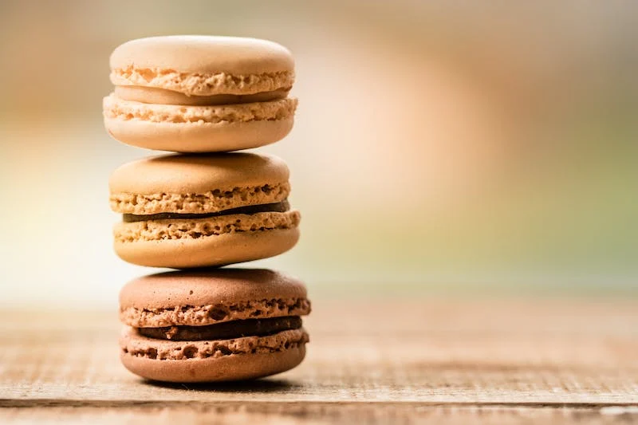

2,000 CATS ADOPTED
Finding homes for rescue cats since 2023.
We partner with rescues who save homeless cats and kittens at risk of euthanasia in high kill shelters, and house them in our cafes. Once they are at our locations, we care for our cats & kittens until they are adopted! Our mission is to reduce euthanasia in animal shelters, and to improve the lives of homeless cats.
NOW SERVING
Hot Drinks

Cold Drinks

Pastries
MEET OUR FOUNDER
Read Her Story
I started Crumbs & Whiskers in 2023, because I love baking and cats. It took a lot of hope, risk, and late nights, but I'm so proud of the company I've created. I hope you can experience the magic of our cat & kitten cafes. When I'm not working on Calico Cafe, I like to spend my time walking in nature, playing with my cat, or writing poetry.